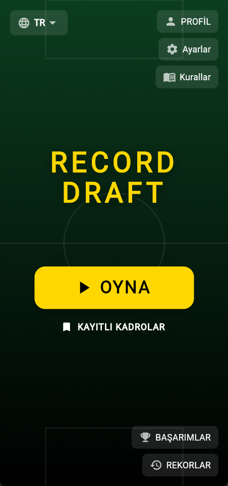
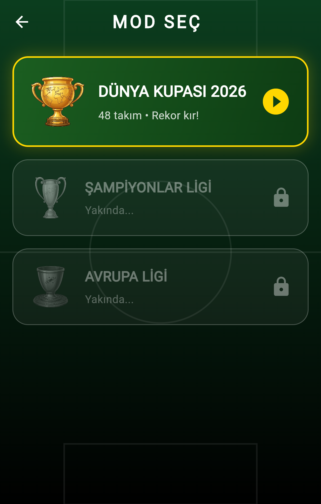
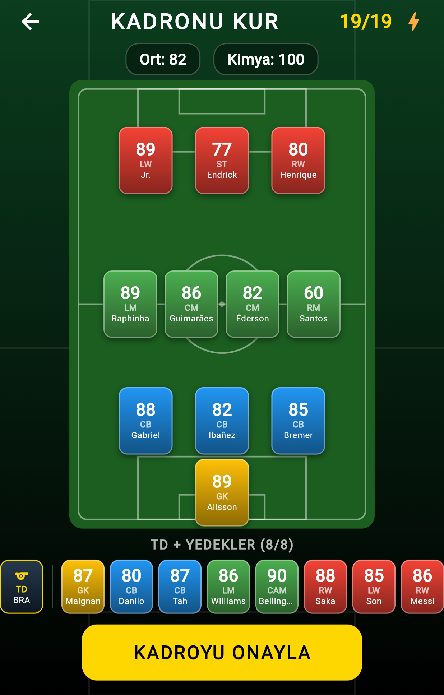
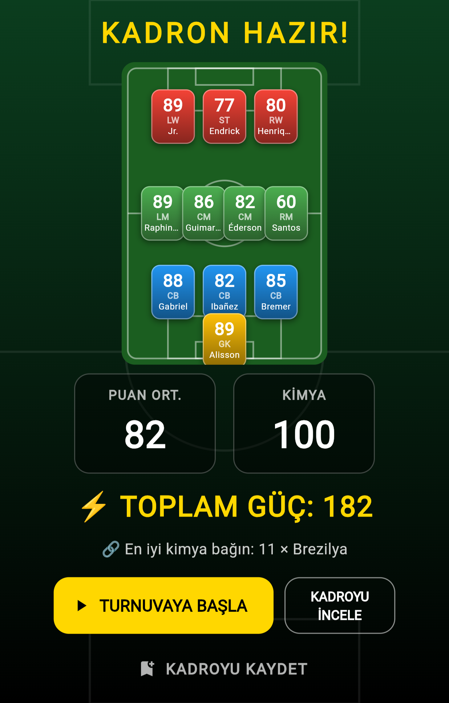

Reklamsız bir futbol draft oyunu. Fikirden Google Play yayınına kadar tek kişilik geliştirme: veri modeli, oyun mekaniği, görsel ve ses seti, çeviri ve mağaza süreci.
Futbol oyunlarında en çok oynanan modlardan biri kadro kurma: sınırlı seçeneklerden en iyi on biri çıkarmak. Ama bu modun etrafındaki oyunlar ya devasa bir menajerlik simülasyonunun içine gömülü ya da her turun arasına reklam sıkıştıran ücretsiz oyunlar.
Record Draft bu boşluğa oturuyor: beş on dakikada bitirilebilen, reklam görmediğin, ilerlemek için ödeme yapmadığın bir kadro kurma oyunu.




Bir tur, kesintisiz beş on dakika sürüyor. Reklam molası, bekleme sayacı ve enerji sistemi yok.
Uygulama 16 ayrı ekrandan oluşuyor: yükleme, ana menü, mod seçimi, formasyon seçimi, oyuncu seçimi, kadro özeti, grup seçimi, turnuva ağacı, simülasyon, sonuç, kayıtlı kadrolar, başarımlar, profil, kurallar, ayarlar ve geliştirme sırasında kullandığım yüz önizleme ekranı.
Her ekranı koda geçmeden önce ayrı bir tasarım dokümanına yazdım — ekranın amacı, üzerindeki öğeler, kullanıcının oradan nereye gidebileceği. Bu dokümanlar hâlâ depoda duruyor ve bir ekranı değiştirmem gerektiğinde önce oraya bakıyorum.
Oyunun tamamı cihazda çalışıyor. Arka uç, hesap sistemi, ağ çağrısı yok. Bu bir kısıt değil, bilinçli bir seçimdi: sunucu demek işletme maliyeti, gizlilik yükümlülüğü, çevrimdışı çalışamama ve tek başına bakması zor bir yüzey demekti.
| Katman | Seçim ve gerekçe |
|---|---|
| İstemci | Flutter / Dart — tek kod tabanı, tek kişilik ekiple sürdürülebilir |
| Oyuncu verisi | Uygulama paketine gömülü JSON — ağ çağrısı yok, ilk açılış anında hazır |
| Kalıcı kayıt | Cihaz üzerinde anahtar–değer saklama (kayıtlı kadrolar, rekorlar, başarımlar, ayarlar) |
| Ses | Menü müziği ve efektler için tek ses paketi; ayarlardan kapatılabiliyor |
| Çeviri | Flutter'ın resmî yerelleştirme altyapısı — 10 dile tam çeviri (Türkçe, İngilizce, Almanca, İspanyolca, Fransızca, İtalyanca, Portekizce, Japonca, Korece, Arapça) |
| Dış bağımlılık | Yalnızca üç üçüncü parti paket — her bağımlılık gelecekteki bir bakım borcu |
Kadro kurma oyunlarında en kolay tuzak, en yüksek puanlı oyuncuyu almanın her zaman doğru hamle olmasıdır. Öyle olduğunda oyun bir seçim değil, sıralama okumaya dönüşür.
Record Draft'ta bir oyuncunun kadroya katkısı tek başına reytingiyle değil, etrafındaki oyuncularla kurduğu üç ayrı ilişkiyle belirleniyor:
Üç boyut birlikte değerlendiriliyor; biri güçlüyken diğerleri zayıf kalabiliyor. Kadro özeti ekranı, kimya puanının yanında onu en çok besleyen bağı da gösteriyor (örneğin "11 × Brezilya") — böylece oyuncu puanın nereden geldiğini görüyor.
Sistem üç sürüm geçirdi. İlk sürüm tek boyutluydu ve kapalı testte fark edildi ki oyuncular kimyayı hiç umursamıyor, sadece en yüksek puanı topluyorlardı — yani mekanik oyunu şekillendirmiyordu. Üçüncü sürümde üç boyut birlikte hesaplanmaya başlayınca aynı kadro havuzundan çok daha farklı kadrolar çıkmaya başladı.
Formül ve hesaplama ayrıntıları bu belgede paylaşılmıyor; oyunun ayırt edici mekaniği olduğu için kaynak kodu kapalı tutuluyor.
Oyunda başlangıçta ödüllü video reklam, şans çarkı ve oyun içi para birimi vardı. Kapalı testte bu yapının oyun akışını böldüğünü, oyuncuyu oynamak yerine beklemeye ittiğini gördüm. Tamamını söktüm: yeniden dağıtım hakları ücretsiz oldu, paketler bir kez açılıyor, başarımlar ödül yerine rozet olarak veriliyor.
Neden: kısa vadeli gelirden vazgeçmek, oyunun tek satış noktası olan "kesintisiz oynanış"ı korumaktan daha ucuza geldi.
Ülke, kulüp ve lig ilişkileri artık birlikte hesaplanıyor. Bu, kadro kurmayı tek değişkenli bir optimizasyondan çok değişkenli bir denge problemine çevirdi.
Neden: mekanik oyuncunun kararını değiştirmiyorsa, o mekanik aslında yoktur.
Tüm veri uygulamanın içinde; oyun çevrimdışı çalışıyor, hesap açmayı gerektirmiyor ve kullanıcıdan veri toplamıyor.
Neden: tek kişilik bir projede sunucu, aylık maliyet ve kalıcı bakım yükü demekti. Oyunun hiçbir özelliği bunu zorunlu kılmıyordu.
On bir ekran için ayrı tasarım dokümanı yazdım: ekranın amacı, üzerindeki öğeler, çıkışları. Kod bu dokümanlardan sonra geldi.
Neden: tek başına çalışırken en pahalı hata, yazdıktan sonra "aslında böyle olmayacaktı" demek.
Gelir modeli koddan silinmedi, kapatılabilir bir anahtarın arkasına alındı. Oyun ücretsiz ve reklamsız yayınlandı; kullanıcı tabanı oluşursa açılıp kapanabilir.
Neden: hiç kullanıcısı olmayan bir oyunu para kazanmak için bozmanın anlamı yok.
Tek kişilik bir projede her şeyi test etmek mümkün değil. Bu yüzden testleri sessizce bozulabilecek yerlere yoğunlaştırdım: kural motorları ve yerleşim geometrisi. Bir renk yanlış olursa gözle görürüm; kimya puanı yanlış hesaplanırsa görmem.
| Test | Neyi koruyor |
|---|---|
| Kadro kimyası | Üç boyutlu hesabın doğruluğu — oyunun ana mekaniği |
| Başarım motoru | Başarımların doğru koşulda ve bir kez tetiklenmesi |
| Sürükle-bırak takas | İki oyuncu yer değiştirdiğinde kadronun tutarlı kalması |
| Formasyon yerleşimi | Farklı formasyonlarda oyuncuların doğru noktalara oturması |
| Kart yerleşimi | Küçük kartların taşmadan ve üst üste binmeden dizilmesi |
| Kayıtlı kadro | Kaydedilen kadronun aynı şekilde geri yüklenmesi |
Altı test dosyası, yaklaşık 570 satır test kodu.
Test kullanıcılarını oyunun konusuyla gerçekten ilgilenecek kişilerden seçtim. Gelen geri bildirimi tek tek yamamak yerine öbeklere ayırdım ve her öbeği ayrı bir tur olarak kapattım — böylece hangi değişikliğin neyi düzelttiği izlenebilir kaldı.
Uygulamayı yayına taşımak, geliştirmeden ayrı bir öğrenme alanı oldu. Sırasıyla geçtiğim adımlar:
Bu adımların hiçbiri kod yazmak değil, ama biri eksik kaldığında uygulama kullanıcıya ulaşmıyor. Bir ürünü "bitirmek" ile "yayınlamak" arasındaki farkı burada gördüm.